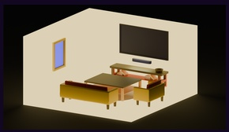
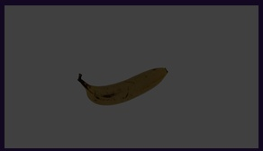
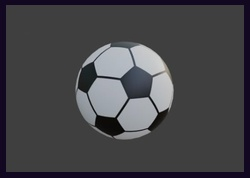
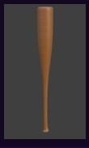
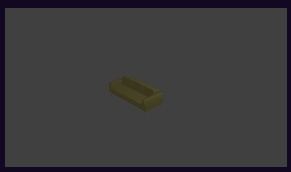

Ruang Tamu 3D
Pemodelan ruang tamu 3D untuk melatih pembuatan lingkungan interior, furnitur, pencahayaan, dan komposisi objek.
Karya Pemodelan 3D

Pemodelan ruang tamu 3D untuk melatih pembuatan lingkungan interior, furnitur, pencahayaan, dan komposisi objek.

Pemodelan objek organik sederhana untuk melatih bentuk, proporsi, material, dan detail permukaan.

Pembuatan model bola 3D sebagai latihan dasar pemodelan bentuk geometris dan pengaturan material.

Pemodelan tongkat sederhana untuk melatih bentuk dasar, ketebalan objek, detail permukaan, dan pencahayaan.

Pembuatan sofa 3D dengan fokus pada bentuk, proporsi, susunan bagian, dan tampilan visual objek.
Kumpulan karya pemodelan 3D yang dibuat untuk mengembangkan kemampuan menggunakan Blender dan memahami proses pembuatan aset, material, lingkungan, serta visualisasi 3D.